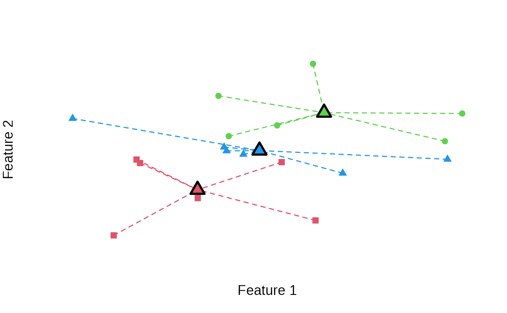

Compute the k-means variance objective for a given clustering.
variance_objective(x, clusters)A vector, matrix or data.frame of data points. Rows correspond to elements and columns correspond to features. A vector represents a single feature.
A vector representing (anti)clusters (e.g., returned
by anticlustering or
balanced_clustering)
The total within-cluster variance
The variance objective is given by the sum of the squared
errors between cluster centers and individual data points. It is the
objective function used in k-means clustering, see
kmeans.
Jain, A. K. (2010). Data clustering: 50 years beyond k-means. Pattern Recognition Letters, 31, 651–666.
Papenberg, M., & Klau, G. W. (2021). Using anticlustering to partition data sets into equivalent parts. Psychological Methods, 26(2), 161–174. https://doi.org/10.1037/met0000301.
Späth, H. (1986). Anticlustering: Maximizing the variance criterion. Control and Cybernetics, 15, 213–218.
data(iris)
## Clustering
clusters <- balanced_clustering(
iris[, -5],
K = 3
)
# This is low:
variance_objective(
iris[, -5],
clusters
)
#> [1] 81.6306
## Anticlustering
anticlusters <- anticlustering(
iris[, -5],
K = 3,
objective = "variance"
)
# This is higher:
variance_objective(
iris[, -5],
anticlusters
)
#> [1] 681.3694
# Illustrate variance objective
N <- 18
data <- matrix(rnorm(N * 2), ncol = 2)
cl <- balanced_clustering(data, K = 3)
plot_clusters(data, cl, illustrate_variance = TRUE)
